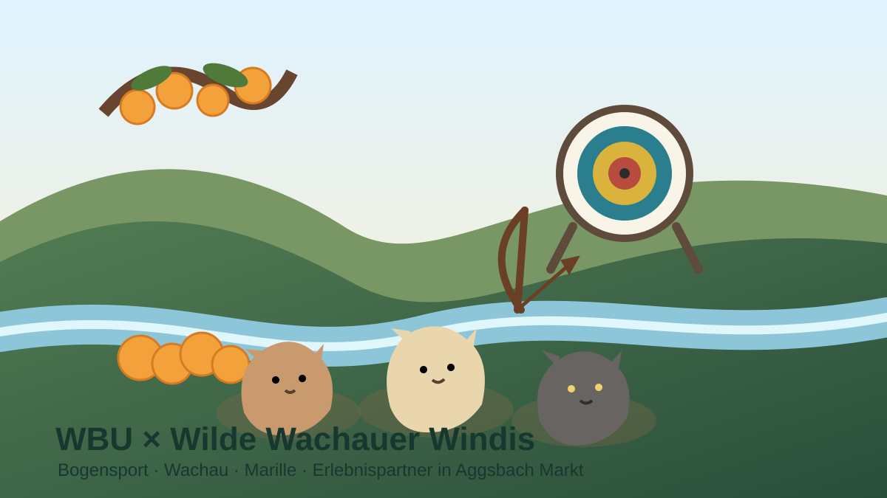

Einweisung
Einsteiger erhalten zuerst eine Einführung in Bogen, Pfeile, Schusstechnik und vor allem in die Sicherheitsregeln.
Bogensport, Natur, Wachau-Geschichten und regionale Marille verbinden sich zu einem echten Erlebnis rund um Aggsbach Markt.

Die Wachauer Bogensport Union (WBU) ist unser lokaler Erlebnispartner für Bogensport in Aggsbach Markt. Die sportliche Durchführung, Einschulung, Parcoursregeln und Sicherheitsbestimmungen liegen vollständig bei der WBU.
Kontakt: WBU Aggsbach, Aggsbach Markt 90, 3641 Aggsbach Markt · Gerald Bauer · +43 660 4684133 · wbu-aggsbach@gmx.at
Ein 3D-Parcours ist ein Rundweg durch naturnahes Gelände. An mehreren Stationen stehen dreidimensionale Tierziele. Geschossen wird nur von den vorgesehenen Abschusspflöcken und nach den Regeln der WBU. Danach werden die Pfeile gemeinsam geholt und die Gruppe geht zur nächsten Station weiter.
Einsteiger erhalten zuerst eine Einführung in Bogen, Pfeile, Schusstechnik und vor allem in die Sicherheitsregeln.
An jeder Station wird vom vorgesehenen Pflock in Richtung des 3D-Ziels geschossen. Abstand und Gelände wechseln von Station zu Station.
Erst wenn der Schussbereich frei ist, wird geschossen. Niemand geht während des Schießens vor die Schützenlinie.
Nach Abschluss der Schüsse geht die Gruppe gemeinsam zum Ziel, holt die Pfeile und setzt den Parcours fort.
Wichtig: Diese Erklärung ist nur eine Orientierung. Verbindlich sind immer die aktuelle Einschulung, Beschilderung und Sicherheitsordnung der WBU.
Ein kompakter Rundgang für ein abwechslungsreiches Bogensport-Erlebnis in der Natur.
Ein größerer Rundgang mit zusätzlichen Stationen für alle, die länger unterwegs sein möchten.
Für Gäste ohne eigene Ausrüstung kann nach telefonischer Voranmeldung Leihausrüstung und eine Einführung organisiert werden. Details zu Verfügbarkeit und Nutzung bitte direkt mit der WBU abstimmen.
Im Windis Erlebnispass gibt es eine freiwillige Partner-Bonusaufgabe: Bogensport bei der WBU ausprobieren oder einen Parcours erleben. Für Einsteiger gilt: nur nach Einschulung und entsprechend den Regeln der WBU.
Zum ErlebnispassDie WBU ist auf der Windis Wachaukarte als echter Erlebnisort in Aggsbach Markt eingebunden. So verbinden sich Geschichten, Bewegung und ein regionales Ausflugsziel.
Zur WachaukarteZuhause am Bach empfiehlt die WBU Gästen als nahe Aktivität. Für auswärtige Bogenschützen bietet die Unterkunft einen persönlichen Ausgangspunkt in Aggsbach Markt.
Zur UnterkunftGerald Bauer verbindet den Bogensport auch mit regionaler Landwirtschaft. Neben Wachauer Marillen und Ab-Hof-Produkten gibt es Wachauer Marillenschnaps und Liköre direkt vom Erzeuger. Damit entsteht neben dem Sport eine zweite regionale Erlebnislinie rund um Marille, Herstellung und Wachauer Genuss.
Familien: Für Kinder und Jugendliche steht das Kennenlernen der Wachauer Marille, ihrer Verarbeitung und der regionalen Landwirtschaft im Vordergrund. Marillenschnaps, Liköre und Verkostungen sind ausschließlich für Erwachsene und nur nach persönlicher Vereinbarung vorgesehen.
Bogensport nach WBU-Regeln, Natur entdecken, Wachauer Marillen kennenlernen und die Erlebnisse im digitalen Windis Pass sammeln.
Wachauer Marillenschnaps und Liköre direkt vom Erzeuger. Ein Besuch beziehungsweise eine Verkostung in der Brennerei ist nach persönlicher Vereinbarung möglich. Preise, Verfügbarkeit und Verkostungszeiten werden direkt mit dem Erzeuger abgestimmt.
Die Kooperation setzt bewusst auf Qualität und regionale Verbindung: WBU für Bogensport, Gerald Bauer für Wachauer Marille, Marillenschnaps und Liköre direkt vom Erzeuger, die Wilden Wachauer Windis für Geschichten und spielerische Aufgaben sowie Zuhause am Bach als Unterkunft und Ausgangspunkt.